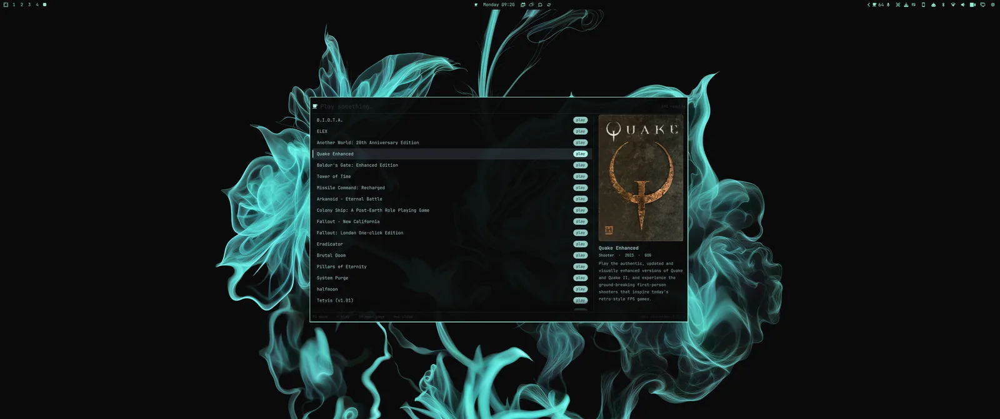
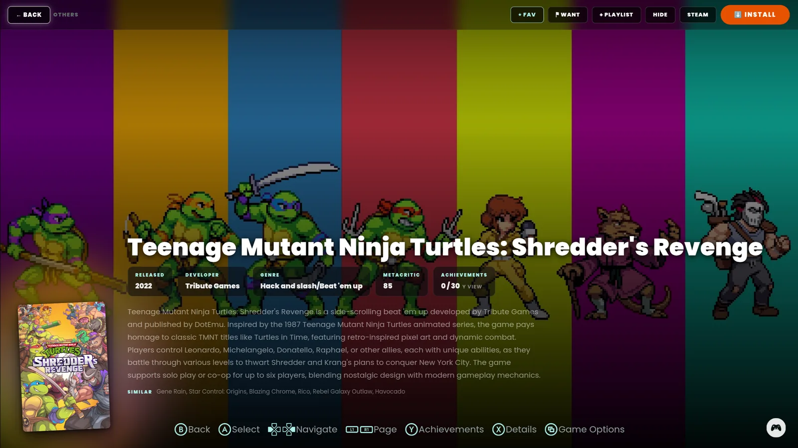
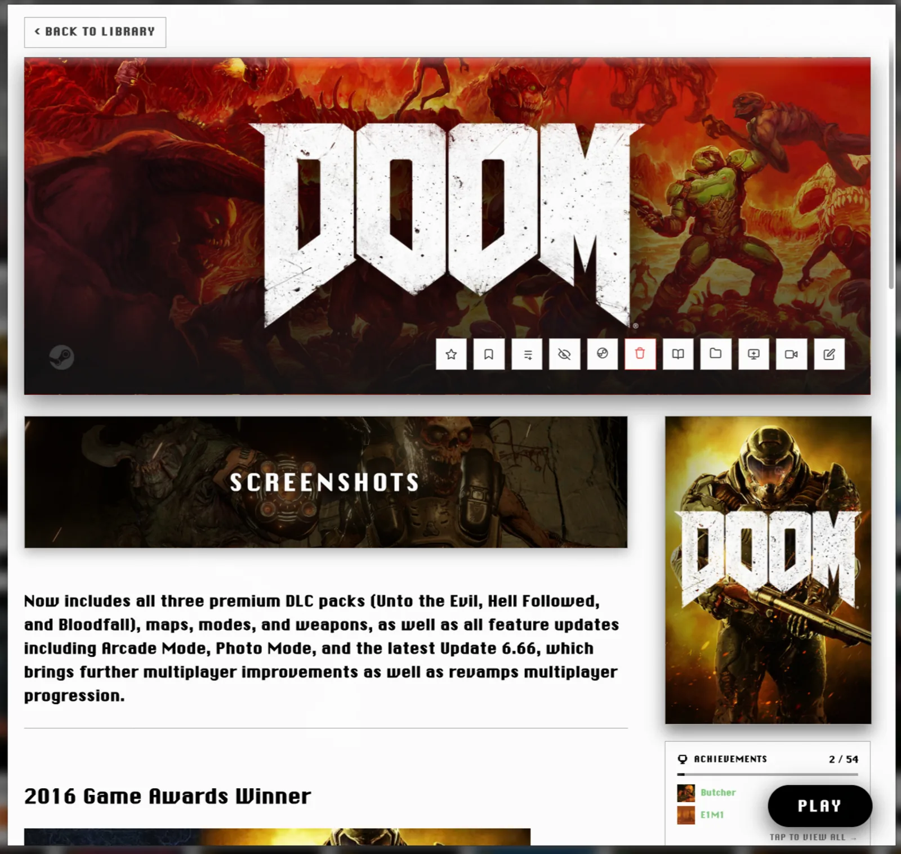
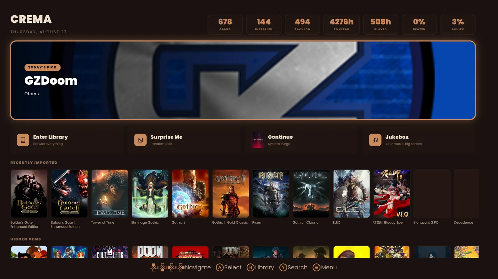
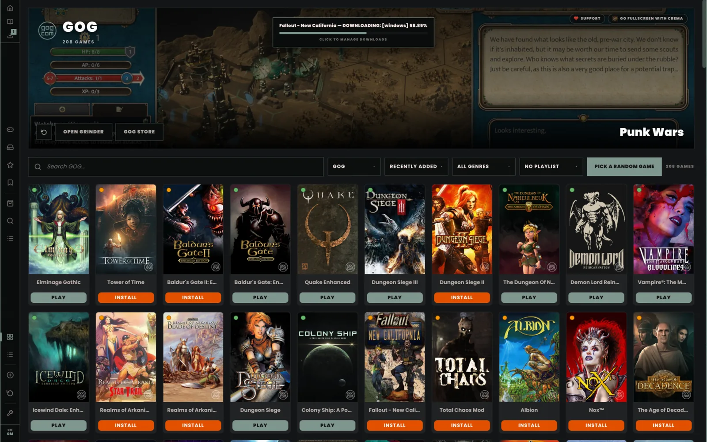
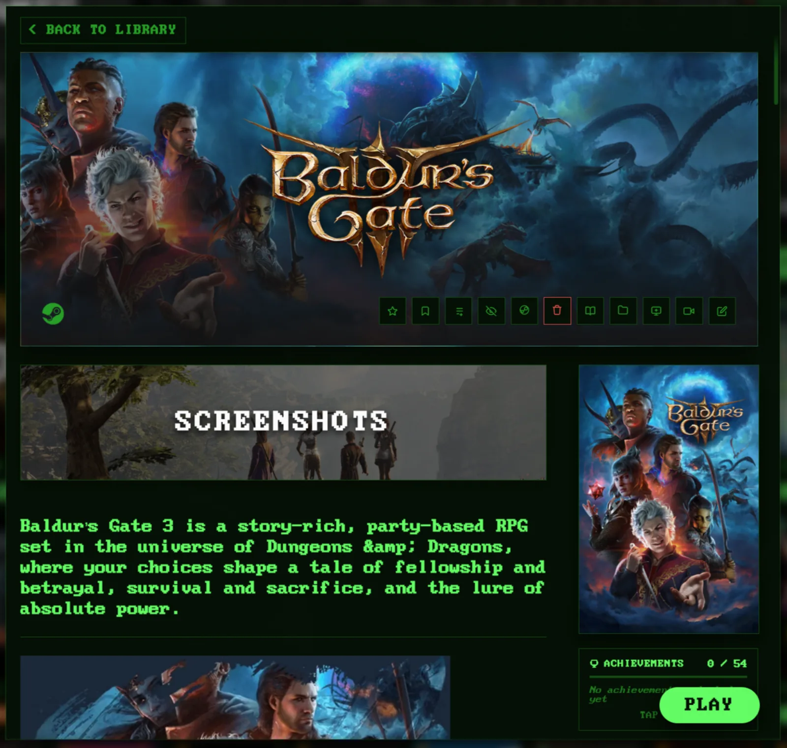

Every game you own — Steam, GOG, Epic, itch, PICO-8, emulators, fan games, source ports and mods — in one place. In the bar. One keystroke away. Cafe Neurotico is being rebuilt around that idea, and 2.0 is what it is becoming.
The Manager is the desk: import, organise, scrape, install, launch, with a mouse and keyboard. CREMA is the sofa: fullscreen, gamepad-first, made for a television across a room. GRINDER works underneath both, installing GOG and Epic games without a store client.
It is one AppImage. Nothing to install alongside it, and your library, artwork and settings live in a folder beside it — portable, backed up by copying, gone when you delete it.
Shot on Omarchy, on the machine it is developed on. Nothing here is a mockup.






Cafe Neurotico runs on any Linux desktop, and it is built and tested on Omarchy — which is why it now behaves like part of it rather than a visitor.
A widget showing what is installed and what is playing, with a menu one click from the library, the couch face and your storage.
A launcher overlay: type a few letters, press Enter, play. Cover art, genre and a sentence about whatever you are pointing at.
It reads the palette your desktop is actually using. Change it with omarchy theme set and the app follows.
Fullscreen on the screen you chose, at the resolution you expect — including the X11 detail that made games pick the smallest monitor.
What you can download today is the 1.11.x experimental line — the work in progress, not a settled release. It is used daily on the machine it is built on, and it will have rough edges. 2.0 is the destination, and there is no date on it. If you want the calm version, wait for that one.